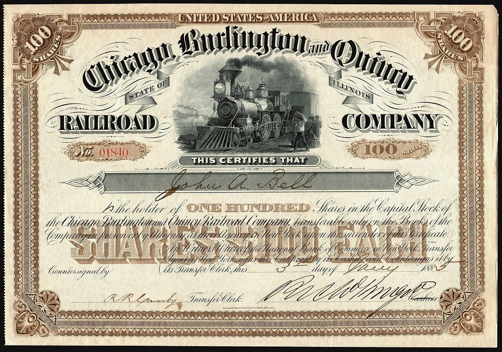
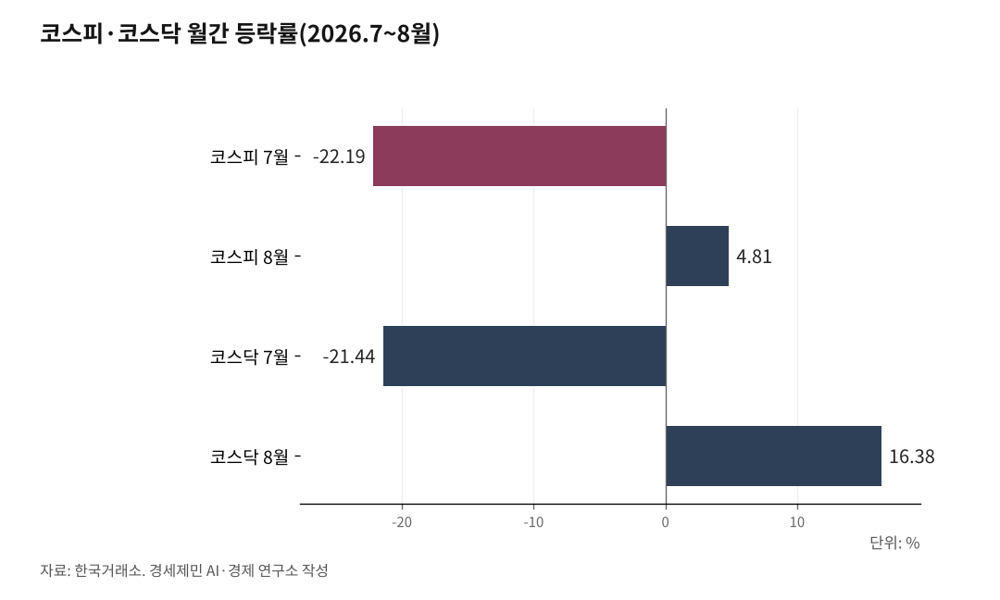

[주식공부] 코스피 18.45% 하락, 반등을 받친 건 자사주
7월 22.19% 하락 뒤 8월 4.81% 반등
26일 기타법인 1조5849억원 순매수, 나머지 셋은 모두 순매도
90조 환원 발표 다음 장 삼성전자 8.70% 급락, 반등마다 판 개인
AI경세제민=김갑봉 기자 | (데이터 기준시점: 2026년 8월 27일 종가, 해외 지수는 8월 26일 종가. 기준금리와 엔비디아 실적은 8월 27일 오전 확정분 / 마지막 데이터 학습 완료일 2026년 5월 5일, 이후 웹검색 검증)

코스피가 두 달 동안 1564.11포인트(18.45%) 빠졌다. 6월 30일 8476.48에서 8월 27일 6912.37이 됐다. 같은 기간 미국 스탠더드앤드푸어스(S&P)500지수는 7483.23에서 7675.70으로 2.57% 올랐다.
낙폭은 한 날에 몰렸다. 7월 28일 코스피는 10.84% 빠진 6023.66으로 마쳤다. 하루 낙폭 역대 2위였고 매도 사이드카와 서킷브레이커가 같은 날 걸렸다. 그날 외국인은 유가증권시장에서만 4조9664억원을 팔았다.
이 글은 8월 27일 종가 기준이다. 8월 마감까지 28일과 31일 두 거래일이 남았다.
22.19% 뺏기고 4.81% 되찾은 두 달
달을 갈라 보자. 코스피는 7월 한 달 22.19% 빠져 8476.48에서 6595.45가 됐다. 8월에는 4.81% 올라 6912.37로 왔다. 코스닥은 7월에 21.44% 빠지고 8월에 16.38% 올라 916.18에서 837.65가 됐다. 두 달 누적은 코스피 18.45%, 코스닥 8.57% 하락이다.
바닥과 반등이 사흘 안에 붙어 있었다. 7월 28일 6023.66에서 31일 6595.45로 9.49% 되올랐다. 그 31일 SK하이닉스는 29.95% 올라 상한가를 쳤고 삼성전자는 26.81% 올랐다. 둘 다 하루 상승률 사상 최대다.
8월 종가는 3일 6257.45가 가장 낮았고 14일 6977.94가 가장 높았다. 18일에는 장중 7200선을 되찾았다가 1.55% 내려 마쳤다.

"미국도 같이 빠졌다"
같은 인공지능(AI) 조정이라는 말은 절반만 맞다. 6월 30일부터 8월 26일까지 다우존스산업평균지수는 2.22%, 나스닥종합지수는 0.35% 올랐다.
7월만 떼면 나스닥 2.56%, 코스피 22.19% 하락이다. 낙폭 차이가 8.67배다.
아시아도 갈렸다. 홍콩 항셍지수는 12.11% 올랐고, 중국 상하이종합지수는 4.44%, 일본 닛케이225지수는 5.42% 내렸다.
같은 조정을 겪었다는 말과 같은 크기로 겪었다는 말은 다르다. 낙차를 만든 것은 실적이 아니라 돈의 성격이었다.
지수를 흔든 것, 실적 아닌 미국 30년물
거시 다섯을 보자. 미 연방기금금리는 3.50~3.75%다. 한국은행은 7월 16일 2.75%로 올린 뒤 8월 27일 3.00%로 다시 올렸다.
채권금리가 문제였다. 미국 30년물 국채금리는 8월 18일 장중 5.337%까지 올라 2007년 이후 19년 만에 가장 높았다. 독일과 프랑스 30년물도 15년, 18년 만의 최고였다. 바로 다음날 코스피는 5.80% 빠진 6471.17로 마쳤다.
미 재무부가 19일 되사기를 두 배로 늘리겠다고 했는데도 금리는 되올랐다. 10년물은 21일 4.75%로 20개월 만의 최고를 찍은 뒤 26일 4.65%로 내렸다.
나머지 셋은 압력을 덜었다. 브렌트유는 7월 23일 배럴당 100달러를 넘었다가 8월 26일 88.82달러(약 12만3000원)로 내렸다. 원달러 환율은 7월 1일 1550원대에서 8월 26일 1384.80원으로 내렸다. 한국 소비자물가는 6월 3.2%에서 7월 2.8%로, 미국은 6월 3.5%에서 7월 3.4%로 내렸다.
브렌트유 88.82달러와 원달러 1384.80원은 8월 26일 같은 시점의 숫자다. 유가와 환율과 물가가 함께 내리는 동안 지수는 18.45% 빠졌다.
폭락에 받고 반등에 판 개인
외국인은 7월 한 달 유가증권·코스닥시장에서 17조9055억원을 순매도했다. 8월 19일에는 외국인이 4조242억원, 기관이 1조7926억원을 팔았고 개인이 5조6403억원을 받아냈다. 지수는 5.80% 빠졌고 삼성전자는 7.82%, SK하이닉스는 9.75% 내렸다.
다음날은 거꾸로였다. 20일 외국인이 2조2991억원을 사자 지수는 5.89% 올랐고 매수 사이드카가 걸렸다. 그 오른 자리에서 개인은 2조6546억원을 팔았고 기관도 6618억원을 덜어냈다.
24일과 26일도 그랬다. 24일 외국인 3조6758억원과 기관 1조2917억원 순매도에 개인이 3조3192억원을 받았고 지수는 3.12% 빠졌다. 26일 지수가 0.97% 오르자 개인은 2조2468억원을 팔았다.
27일에도 같았다. 엔비디아 실적에 지수가 1.53% 올라 6912.37로 마치자 개인은 1조9134억원을 팔았다. 외국인이 1366억원, 기관이 1816억원을 받았다. 개인이 폭락에 받고 반등에 판 것과 외국인이 폭락에 팔고 반등에 산 것은 같은 8월의 숫자다.
빚도 같이 정리됐다. 금융투자협회 집계로 신용거래융자 잔고는 6월 24일 38조6328억원에서 7월 31일 28조9350억원으로 줄었다. 25.10%가 한 달여 만에 사라졌다.
"개미는 늘 늦는다"는 말은 이 두 달에 반만 맞았다. 8월에 짧게 돈 개인은 이겼다. 19일 6471.17에 받아 20일 6852.58에 판 자리가 5.89%, 24일 6696.96에 받아 26일 6808.21에 판 자리가 1.66%다.
7월에 받은 물량은 다르다. 6월 30일 8476.48에 산 것은 아직 18.45% 아래다. 7월 28일 6023.66에 받은 것만 14.75% 위다. 같은 개인이라도 언제 받았느냐로 갈렸다.
돈이 옮겨 간 자리는 중소형주다. 8월에 코스피가 4.81% 오르는 동안 코스닥은 16.38% 올랐다. 반도체가 무너진 19일에도 LG에너지솔루션은 1.85%, 한화에어로스페이스는 2.71% 올랐다. 판 돈은 소재·부품·장비와 바이오와 로봇으로 갔다.
90조 환원을 발표한 회사가 산 제 주식
두 달 사이 사상 최대 주주환원이 두 건 나왔다. SK하이닉스는 8월 19일 이사회에서 자기주식 40조43억원어치를 사기로 했다. 발행주식 3.3%이고 8월 20일부터 11월 19일까지 장내에서 사서 전량 소각한다. 거래일 약 62일로 나누면 하루 6452억원이다.
삼성전자는 8월 21일 이사회에서 2026년 주주환원 규모를 90조원에서 110조원으로 정했다. 종전 최대인 2020년 20조3000억원의 4.4배에서 5.4배다.
자사주 15조원은 임직원 보상용이고 소각이 아니다. 소각 여부는 2027년 1월 이사회에서 정한다.
여기서 주주환원(株主還元)을 짚고 가자. 회사가 번 돈을 주주에게 돌려주는 길은 넷이다. 배당은 현금을 나눠 주고, 자사주 매입은 회사가 제 주식을 사들이고, 소각은 그 산 주식을 없앤다. 임직원 보상용 취득은 주식을 직원에게 주려고 사 둔다.
넷 가운데 유통주식수를 줄이는 것은 소각 하나다. 주식 수가 줄면 1주가 갖는 이익 몫이 커진다. 사기만 하고 없애지 않으면 그 주식은 언제든 다시 시장에 나올 수 있다.
값은 지수를 따라가지 못했다. 발표 뒤 첫 정규장인 8월 24일 삼성전자는 8.70% 빠진 25만7000원에 마쳤다. 환원 내용에 실망한 매물이 삼성그룹주 전반으로 번졌다.
8월 한 달로 보면 삼성전자는 26만2500원에서 26만6000원으로 1.33%, SK하이닉스는 171만8000원에서 173만원으로 0.70% 올랐다. 같은 달 코스피는 4.81% 올랐다.
지수를 받친 것은 그 회사들의 돈이었다. 26일 유가증권시장에서 기타법인은 1조5849억원을 순매수했다. 그 안에 SK하이닉스 1조886억원과 삼성전자 4817억원 자사주 매입이 있다. 같은 날 외국인과 개인과 기관을 모두 합치면 1조5980억원 순매도였다.
돈을 버는 일과 그 돈을 나누는 일과 주가가 오르는 일은 서로 다른 일이다. 90조원을 환원한다고 발표한 회사가 제 주식을 사서 지수를 받쳤고, 그 오른 자리에서 개인은 2조2468억원을 팔았다.
금통위 없는 9월, 축은 FOMC 하나
먼저 앞선 전망을 되짚는다. 7월 26일 글은 8월을 6500~7300 구간의 매물 소화로 봤다. 실제 8월 종가는 6257.45와 6977.94 사이로, 하단을 242.55포인트 밑돌았고 상단에 322.06포인트 못 미쳤다.
원인 지목도 빗나갔다. 브렌트유가 100달러 위에 눌러앉으면 6500선이 시험대에 오른다고 봤다. 브렌트유는 88.82달러로 내려왔는데도 6500선이 무너졌다.
8월 15일 글은 다음 2주를 금융통화위원회와 잭슨홀 심포지엄이 가른다고 봤다. 그 2주 사이 지수는 6977.94에서 6912.37로 0.94% 내렸다. 가른 것은 두 일정이 아니라 8월 18일 미국 30년물이었다.
한국은행은 27일 기준금리를 3.00%로 올렸다. 7월에 이어 두 달 연속이다.
다음 금통위는 10월 22일이라 이 금리가 9월 내내 유지된다. 한국은행은 같은 날 올해 성장률 전망을 2.6%에서 3.3%로 올렸다.
미국은 다르다. 연방공개시장위원회(FOMC)가 9월 15~16일 열린다. 위원 각자가 적정하다고 보는 금리를 점으로 찍은 점도표도 함께 나온다.
엔비디아는 현지시간 26일 2027회계연도 2분기 매출을 962억2000만달러(약 133조원)로 발표했다. 지난해보다 106% 늘었고 시장 예상치 920억달러를 웃돌았다.
그 실적에 27일 삼성전자는 1.72% 올라 26만6000원, SK하이닉스는 2.49% 올라 173만원에 마쳤다. 장 초반 4% 안팎이던 상승 폭이 절반 아래로 줄었다.
9월 내내 이어지는 매수도 있다. SK하이닉스는 11월 19일까지 하루 6452억원어치 자사주를 장내에서 산다. 26일 지수를 받친 그 돈이 그때까지만 들어온다는 뜻이다. 삼성전자는 3분기 안에 현금배당 약 30조원을 푼다.
지켜볼 자리는 둘이다. 미국 30년물이 5.337%를 다시 넘는지, 외국인이 순매도를 잇는지다. 18일 30년물이 그 수준에 닿자 다음날 지수가 5.80% 빠졌고, 20일 외국인이 2조2991억원을 사자 5.89% 올랐다.
장기금리를 읽는 일과 실적을 읽는 일은 지난 두 달에도 다른 결과로 이어졌다. 사상 최대 환원이 두 건 발표되는 사이 지수가 18.45% 빠졌고, 그 지수를 받친 돈이 회사 금고에서 나왔다는 것이 이 구간이 남긴 숫자다.
※ 이 기사는 인공지능 프로그램 클로드 오푸스 5(Claude Opus 5)를 활용해 작성했다.
참고문헌
가. 공식 발표자료와 공공기록
· 한국거래소, 유가증권·코스닥시장 지수 및 투자자별 매매동향(2026.6.30~8.27)
· 네이버페이증권, 국내증시 장마감 시세와 투자자별 매매동향(2026.8.27), https://finance.naver.com/sise/
· 한국은행, "2026년 금융통화위원회 정기회의 개최 및 의사록 공개 예정일정", https://www.bok.or.kr/portal/bbs/B0000502/view.do?menuNo=201265&nttId=10094300
· 금융투자협회 종합통계 포털(FreeSIS), 「신용공여 잔고 추이」 가운데 신용거래융자(2026.6.24 및 2026.7.31 기준), https://freesis.kofia.or.kr/
· Federal Reserve Bank of Kansas City, "Jackson Hole Economic Symposium", https://www.kansascityfed.org/research/jackson-hole-economic-symposium/
나. 언론 보도 — 국내 증시
· "[마감시황]코스피, 10.84% 급락한 6023.66 마감…사이드카·서킷브레이커 동시 발동", 다음뉴스, 2026.7.28., https://v.daum.net/v/bHvgYHYCCJ
· "매도 사이드카 이어 서킷브레이커…코스피·코스닥 동반 폭락", 한국경제, 2026.7.28., https://www.hankyung.com/article/2026072808096
· "'서킷브레이커도 소용없었다'…코스피, 中발 쇼크에 하락폭 '역대 2위'", 뉴시스, 2026.7.28., https://www.newsis.com/view/NISX20260728_0003726773
· "[마감시황] 코스피 10% 폭락 '검은 화요일'…양 시장 서킷브레이커 발동", 아주경제, 2026.7.28., https://www.ajunews.com/view/20260728163933514
· "SK하이닉스 상한가 도달…삼성전자도 25% 급등", 한국일보, 2026.7.31., https://www.hankookilbo.com/news/article/A2026073114130001175
· "[0825마감체크] 코스피, 장중 4%대 하락 딛고 상승 전환… 6700선 회복", 인포스탁데일리, 2026.8.25., https://www.infostockdaily.co.kr/news/articleView.html?idxno=217615
· "[오늘의증시] 코스피 6800선 회복…반도체 반등·유가 안정에 1% 상승", 경인방송, 2026.8.26., https://news.ifm.kr/news/articleView.html?idxno=478027
· "코스피, 0.97% 오른 6808.21 마감...원·달러 환율 1384.8원", 국제뉴스, 2026.8.26., https://www.gukjenews.com/news/articleView.html?idxno=3675493
· "8월에만 20% 오른 코스닥, 지금이라도 살까", 데일리안, 2026.8., https://www.dailian.co.kr/news/view/1677234
다. 언론 보도 — 금리와 통화정책
· "'인상 vs 동결' 금리 전망 팽팽… 27일 금통위 주목할 포인트 셋", 서울신문, 2026.8.24., https://www.seoul.co.kr/news/economy/finance/2026/08/24/20260824031001
라. 언론 보도 — 해외 증시와 기업
· "Asian Stocks - 30-06-26", Armenpress, 2026.6.30., https://armenpress.am/en/article/1254362
· "Asian Stocks - 31/07/26", Armenpress, 2026.7.31., https://armenpress.am/en/article/1256897
· "Asian Stocks - 26-08-26", Armenpress, 2026.8.26., https://armenpress.am/en/article/1258933
· "Next FOMC Meeting: September 15-16, 2026", FedRateCalc, https://fedratecalc.com/next-fomc-meeting/
════════════════════════════════════════════════════════════
사진 출처
· [대표사진] Issued by Chicago, Burlington and Quincy Railroad Company, "Aktie Chicago Burlington.jpg", 위키미디어 공용, 퍼블릭 도메인, https://commons.wikimedia.org/wiki/File:Aktie_Chicago_Burlington.jpg
※ 이 기사는 인공지능을 활용해 작성했습니다.
관련기사
- [주식공부] 코스피가 5.80% 오를 때 코스닥은 20.13% 올랐다
- [주식공부] 사상 최대 실적 낸 이틀은 내렸고, 헤지펀드 청산 뒤 17.91% 올랐다
- 코스피 7월에 21.07% 빠졌다, 나스닥은 4.72% 빠졌다
- [주식공부] 코스피 하루 만에 4.46% 빠지고 3.56% 반등…이틀 사이 사이드카가 방향을 뒤집었다
저작권자 © AI경세제민 무단전재 및 재배포, AI학습 및 활용 금지